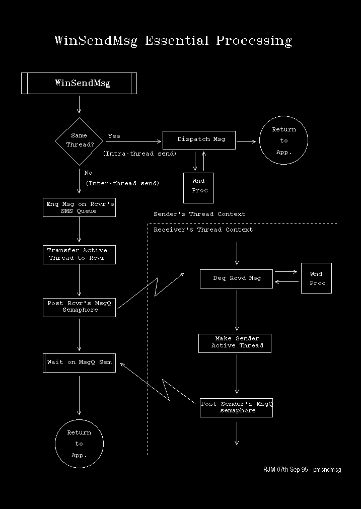

WinSendMsg Logic
These are the essential steps in WinSendMsg processing:
- We check to see if the message is being sent to the
same thread.
WinSendMsg to the same thread is known as an Intra-thread send.
WinSendMsg to another thread is known as an Inter-thread send.
- If intra-thread then the message is dispatched immediately,
from within WinSendMsg.
This behaviour implies that a window procedure may recurse many times, even
if waiting for a response to a WinSendMsg.
- If inter-thread then the message is enqueued to the
receive list of the recipient's MQ.
- Active thread status is transferred to the receiving
thread (if currently owned).
This allows the receiver to unlock the system queue if it had been locked
by the current thread and the current thread is the active thread.
- The receiver's message queue semaphore is posted.
- WinSendMsg waits on the current thread's message
queue for a response to the sent message.
This processing is illustrated in the following diagram:
[Back: WinGetMsg Logic]
[Next: Waiting for Message Activity]